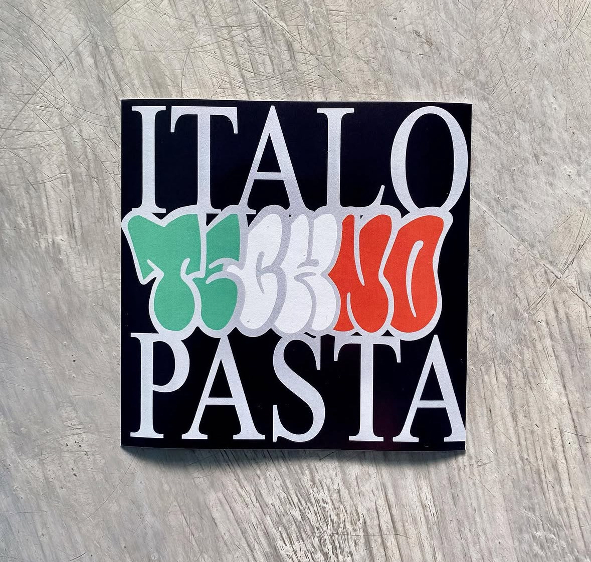
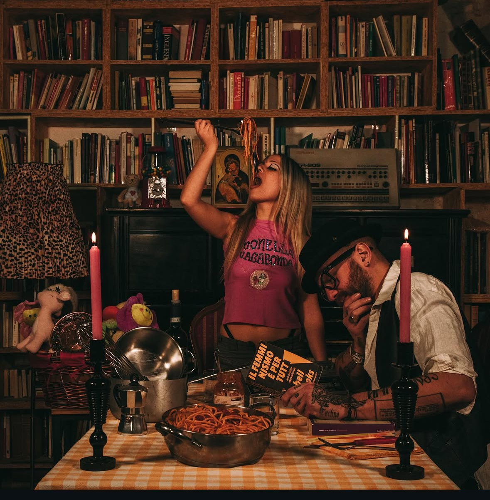

Per quasi quarant'anni l'Italia ha continuato a vivere di nostalgia. Italo Disco, Italo House, Dream House, Progressive, Hardstyle italiana, Dance italiana. Abbiamo avuto momenti straordinari, artisti che hanno cambiato la storia della musica elettronica mondiale, ma negli ultimi vent'anni il nostro Paese ha smesso, almeno in parte, di inventare nuovi linguaggi. Abbiamo imparato soprattutto a importare quelli degli altri.
Berlino, Detroit, Rotterdam, Londra, Amsterdam, Parigi. Ogni nuova tendenza sembrava dover arrivare dall'estero per essere considerata legittima. In Italia il compito sembrava limitarsi a replicarla nel miglior modo possibile.
Ma forse qualcosa sta cambiando.
Da alcuni anni, sta prendendo forma una ricerca musicale che prova a fare una cosa semplice e radicale allo stesso tempo: parlare italiano dentro la techno. Non significa inserire una voce italiana sopra una base elettronica. Significa costruire un immaginario completamente nuovo, dove convivono rave culture, cantautorato, cinema di genere, cultura popolare, dialetti, estetica industriale, romanticismo decadente e una certa ironia tutta italiana.
Questo suono ha iniziato a prendere un nome: Italo Ghetto.

La Italo Ghetto nasce dall'incontro tra la pressione sonora della techno contemporanea e un modo profondamente italiano di raccontare storie. Le melodie sono semplici, quasi popolari. Le parole sono dirette. Le immagini evocano periferie, amori impossibili, vecchie balere, graffiti, motorini, palazzi popolari, discoteche di provincia, cultura rave, cultura hip hop e immaginario cinematografico.
«Non è nostalgia. Non è revival. È una reinterpretazione contemporanea dell'identità italiana.»
Mentre gran parte della musica elettronica internazionale tende a eliminare la voce per cercare un linguaggio universale, la Italo Ghetto fa il contrario: riporta la parola al centro del dancefloor. Per anni ci siamo abituati a cantare in inglese anche quando nessuno capiva davvero cosa stesse dicendo. La Italo Ghetto sceglie invece una strada opposta: raccontare emozioni, rabbia, ironia e desiderio nella propria lingua, senza complessi di inferiorità verso ciò che arriva dall'estero.

Dietro questa ricerca c'è anche un lavoro preciso di produzione musicale. Le strutture rimangono techno, ma vengono contaminate da melodie sognanti, campionamenti italiani, linee vocali riconoscibili e un'estetica che rifiuta la separazione tra musica "alta" e cultura popolare.
Forse l'aspetto più interessante della Italo Ghetto è proprio questo.
"Non nasce per inseguire un algoritmo. Non nasce per adattarsi ai trend di TikTok. Non nasce per occupare una playlist. Nasce perché alcune persone hanno sentito il bisogno di creare un linguaggio che prima non esisteva."
Ogni genere musicale importante è nato quando qualcuno ha smesso di chiedersi cosa funzionasse sul mercato e ha iniziato a domandarsi cosa mancasse davvero. È successo con il jazz, con il punk, con la techno di Detroit, con la drum & bass, con la dubstep e con decine di altri movimenti culturali.

Forse è ancora presto per sapere se la Italo Ghetto diventerà un genere riconosciuto a livello internazionale oppure rimarrà una corrente sotterranea. Nessuno può prevederlo. Ma una cosa appare già evidente.
Dopo molti anni in cui la musica elettronica italiana ha guardato quasi esclusivamente fuori dai propri confini, qualcuno ha ricominciato ad avere il coraggio di guardarsi dentro. Ed è quasi sempre così che iniziano le rivoluzioni culturali.

La musica Italo Ghetto in una playlist:
Freddy K – Devo Andare (1993)
99 Posse – Quello che (Rome Zoo Djs Remix, 1998)
The Stunned Guys – Io sono vivo (1998)
Lento Violento – Cicoria Lessa (2007)
Donato Dozzy & Anna Caragnano – Parola (2015)
Il Quadro di Troisi – Il Giudizio (2020)
DJ Plant Texture & A662 – Respira (2021)
Dolce Potente & Industrial Romantico – Bambola (2023)
Dolce Potente – Venere 2000 (old school mix, 2024)
Industrial Romantico – Vuoi fare a gara (2024)
Sonodistorto – Confusione (2025)
Tania Kim & Silvia Fontana – Ogni Cosa (2026)